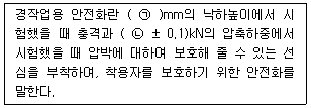
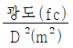
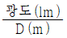
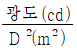
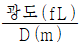
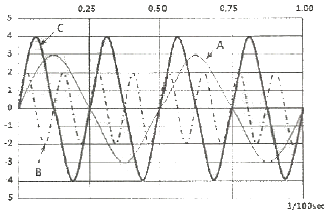
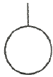
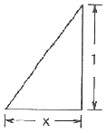

산업안전산업기사 (2020-06-06 기출문제)
1과목: 산업안전관리론
1. 상시 근로자수가 75명인 사업장에서 1일 8시간씩 연간 320일을 작업하는 동안에 4건의 재해가 발생하였다면 이 사업장의 도수율은 약 얼마인가?
- 17.68
- 19.67
- 20.83
- 22.83
(정답률: 69%)

2. 보호구 안전인증 고시에 따른 안전화의 정의 중 ()안에 알맞은 것은?

- ㉠ 500, ㉡ 10.0
- ㉠ 250, ㉡ 10.0
- ㉠ 500, ㉡ 4.4
- ㉠ 250, ㉡ 4.4
(정답률: 73%)
3. 산업안전보건법령상 안전보건표지의 종류와 형태 중 그림과 같은 경고 표지는? (단, 바탕은 무색, 기본모형은 빨간색, 그림은 검은색이다.)
- 부식성물질 경고
- 폭발성물질 경고
- 산화성물질 경고
- 인화성물질 경고
(정답률: 88%)
4. 일반적으로 사업장에서 안전관리조직을 구성할 때 고려할 사항과 가장 거리가 먼 것은?
- 조직 구성원의 책임과 권한을 명확하게 한다.
- 회사의 특성과 규모에 부합되게 조직되어야 한다.
- 생산조직과는 동떨어진 독특한 조직이 되도록 하여 효율성을 높인다.
- 조직의 기능이 충분히 발휘될 수 있는 제도적 체계가 갖추어져야 한다.
(정답률: 91%)
5. 주의의 특성으로 볼 수 없는 것은?
- 변동성
- 선택성
- 방향성
- 통합성
(정답률: 67%)
6. 테크니컬 스킬즈(technical skills)에 관한 설명으로 옳은 것은?
- 모럴(morale)을 앙양시키는 능력
- 인간을 사물에게 적응시키는 능력
- 사물을 인간에게 유리하게 처리하는 능력
- 인간과 인간의 의사소통을 원활히 처리하는 능력
(정답률: 73%)
7. 산업재해 예방의 4원칙 중 “재해발생에는 반드시 원인이 있다.”라는 원칙은?
- 대책 선정의 원칙
- 원인 계기의 원칙
- 손실 우연의 원칙
- 예방 가능의 원칙
(정답률: 90%)
8. 심리검사의 특징 중 “검사의 관리를 위한 조건과 절차의 일관성과 통일성”을 의미하는 것은?
- 규준
- 표준화
- 객관성
- 신뢰성
(정답률: 76%)
9. 조직이 리더에게 부여하는 권한으로 볼 수 없는 것은?
- 보상적 권한
- 강압적 권한
- 합법적 권한
- 위임된 권한
(정답률: 69%)
10. 기억의 과정 중 과거의 학습경험을 통해서 학습된 행동이 현재와 미래에 지속되는 것을 무엇이라 하는가?
- 기명(memorizing)
- 파지(retention)
- 재생(recall)
- 재인(recognition)
(정답률: 64%)
11. 하인리히 재해 발생 5단계 중 3단계에 해당하는 것은?
- 불안전한 행동 또는 불안전한 상태
- 사회적 환경 및 유전적 요소
- 관리의 부재
- 사고
(정답률: 76%)
12. 산업안전보건법령상 특별교육 대상 작업별 교육 작업 기준으로 틀린 것은?
- 전압기 75V 이상인 정전 및 활선작업
- 굴착면의 높이가 2m 이상의 되는 암석의 굴착작업
- 동력에 의하여 작동되는 프레스기계를 3대 이상 보유한 사업장에서 해당 기계로 하는 작업
- 1톤 미만의 크레인 또는 호이스트를 5대 이상 보유한 사업장에서 해당 기계로 하는 작업
(정답률: 63%)
13. 기계ㆍ기구 또는 설비의 신설, 변경 또는 고장 수리 등 부정기적인 점검을 말하며, 기술적 책임자가 시행하는 점검은?
- 정기 점검
- 수시 점검
- 특별 점검
- 임시 점검
(정답률: 70%)
14. 재해의 원인 분석법 중 사고의 유형, 기인물 등 분류 항목을 큰 순서대로 도표화하여 문제나 목표의 이해가 편리한 것은?
- 관리도(control chart)
- 파렛토도(pareto diagram)
- 클로즈분석(close analysis)
- 특성요인도(cause-reason diagram)
(정답률: 75%)
15. 다음 중 매슬로우(Masolw)가 제창한 인간의 욕구 5단계 이론을 단계별로 옳게 나열한 것은?
- 생리적 욕구→안전 욕구→사회적 욕구→존경의 욕구→자아실현의 욕구
- 안전 욕구→생리적 욕구→사회적 욕구→존경의 욕구→자아실현의 욕구
- 사회적 욕구→생리적 욕구→안전 욕구→존경의 욕구→자아실현의 욕구
- 사회적 욕구→안전 욕구→생리적 욕구→존경의 욕구→자아실현의 욕구
(정답률: 87%)
16. 교육의 3요소 중 교육의 주체에 해당하는 것은?
- 강사
- 교재
- 수강자
- 교육방법
(정답률: 77%)
17. O.J.T(On the Job Training) 교육의 장점과 가장 거리가 먼 것은?
- 훈련에만 전념할 수 있다.
- 직장의 실정에 맞게 실제적 훈련이 가능하다.
- 개개인의 업무능력에 적합하고 자세한 교육이 가능하다.
- 교육을 통하여 상사와 부하간의 의사소통과 신뢰감이 깊게 된다.
(정답률: 74%)
18. 위험예지훈련 기초 4라운드(4R)에서 라운드별 내용이 바르게 연결된 것은?
- 1라운드:현상파악
- 2라운드:대책수립
- 3라운드:목표설정
- 4라운드:본질추구
(정답률: 84%)
19. 산업안전보건법령상 근로자 안전ㆍ보건교육 중 채용 시의 교육 및 작업내용 변경 시의 교육 사항으로 옳은 것은?
- 물질안전보건자료에 관한 사항
- 건강증진 및 질병 예방에 관한 사항
- 유해ㆍ위험 작업환경 관리에 관한 사항
- 표준안전작업방법 및 지도 요령에 관한 사항
(정답률: 58%)
20. 산업 재해의 발생 유형으로 볼 수 없는 것은?
- 지그재그형
- 집중형
- 연쇄형
- 복합형
(정답률: 79%)
2과목: 인간공학 및 시스템안전공학
21. 모든 시스템 안전 프로그램 중 최초 단계의 분석으로 시스템 내의 위험요소가 어떤 상태에 있는지를 정성적으로 평가하는 방법은?
- CA
- FHA
- PHA
- FMEA
(정답률: 66%)
22. 시스템의 성능 저하가 인원의 부상이나 시스템 전체에 중대한 손해를 입히지 않고 제어가 가능한 상태의 위험강도는?
- 범주 Ⅰ:파국적
- 범주 Ⅱ:위기적
- 범주 Ⅲ:한계적
- 범주 Ⅳ:무시
(정답률: 71%)
23. 결함수 분석법에서 일정 조합 안에 포함되는 기본사상들이 동시에 발생할 때 반드시 목표사상을 발생시키는 조합을 무엇이라 하는가?
- Cut set
- Decision tree
- Path set
- 불대수
(정답률: 70%)
24. 통제표시비(C/D비)를 설계할 때의 고려할 사항으로 가장 거리가 먼 것은?
- 공차
- 운동성
- 조작시간
- 계기의 크기
(정답률: 53%)
25. 건구온도 38℃, 습구온도 32℃일 때의 Oxford 지수는 몇 ℃인가?
- 30.2
- 32.9
- 35.3
- 37.1
(정답률: 57%)
26. 건강한 남성이 8시간 동안 특정 작업을 실시하고, 분당 산소 소비량이 1.1L/분으로 나타났다면 8시간 총 작업시간에 포함될 휴식시간은 약 몇 분인가? (단, Murrell의 방법을 적용하며, 휴식 중 에너지소비율은 1.5kcal/min이다.)
- 30분
- 54분
- 60분
- 75분
(정답률: 59%)
27. 점광원(point source)에서 표면에 비추는 조도(lux)의 크기를 나타내는 식으로 옳은 것은? (단, D는 광원으로부터의 거리를 말한다.)




(정답률: 67%)
28. 인간공학적 수공구의 설계에 관한 설명으로 옳은 것은?
- 수공구 사용 시 무게 균형이 유지되도록 설계한다.
- 손잡이 크기를 수공구 크기에 맞추어 설계한다.
- 힘을 요하는 수공구의 손잡이는 직경을 60mm이상으로 한다.
- 정밀 작업용 수공구의 손잡이는 직경을 5mm 이하로 한다.
(정답률: 69%)
29. 인간-기계 시스템에서 기계와 비교한 인간의 장점으로 볼 수 없는 것은? (단, 인공지능과 관련된 사항은 제외한다.)
- 완전히 새로운 해결책을 찾아낸다.
- 여러 개의 프로그램된 활동을 동시에 수행한다.
- 다양한 경험을 토대로 하여 의사결정을 한다.
- 상황에 따라 변화하는 복잡한 자극 형태를 식별한다.
(정답률: 82%)
30. 인터페이스 설계 시 고려해야 하는 인간과 기계와의 조화성에 해당되지 않는 것은?
- 지적 조화성
- 신체적 조화성
- 감성적 조화성
- 심미적 조화성
(정답률: 65%)
31. 반복되는 사건이 많이 있는 경우, FTA의 최소 컷셋과 관련이 없는 것은?
- Fussel Algorithm
- Booolean Algorithm
- Monte Carlo Algorithm
- Limnios & Ziani Algorithm
(정답률: 80%)
32. 다음 중 설비보전관리에서 설비이력카드, MTBF분석표, 고장원인대책표와 관련이 깊은 관리는?
- 보전기록관리
- 보전자재관리
- 보전작업관리
- 예방보전관리
(정답률: 64%)
33. 공간 배치의 원칙에 해당되지 않는 것은?
- 중요성의 원칙
- 다양성의 원칙
- 사용빈도의 원칙
- 기능별 배치의 원칙
(정답률: 80%)
34. 화학공장(석유화학사업장 등)에서 가동문제를 파악하는 데 널리 사용되며, 위험요소를 예측하고, 새로운 공저에 대한 가동문제를 예측하는 데 사용되는 위험성평가방법은?
- SHA
- EVP
- CCFA
- HAZOP
(정답률: 78%)
35. 다음은 1/100초 동안 발생한 3개의 음파를 나타낸 것이다. 음의 세기가 가장 큰 것과 가장 높은 음은 무엇인가?

- 가장 큰 음의 세기:A, 가장 높은 음:B
- 가장 큰 음의 세기:C, 가장 높은 음:B
- 가장 큰 음의 세기:C, 가장 높은 음:A
- 가장 큰 음의 세기:B, 가장 높은 음:C
(정답률: 67%)
36. 글자의 설계 요소 중 검은 바탕에 쓰여진 흰 글자가 번져 보이는 현상과 가장 관련 있는 것은?
- 획폭비
- 글자체
- 종이 크기
- 글자 두께
(정답률: 80%)
37. FTA에 사용되는 기호 중 다음 기호에 해당하는 것은?

- 생략사상
- 부정사상
- 결함사상
- 기본사상
(정답률: 81%)
38. 휴먼 에러(human error)의 분류 중 필요한 임무나 절차의 순서 착오로 인하여 발생하는 오류는?
- ommission error
- sequential error
- commission error
- extraneous error
(정답률: 59%)
39. 가청 주파수 내에서 사람의 귀가 가장 민감하게 반응하는 주파수 대역은?
- 20~20000Hz
- 50~15000Hz
- 100~10000Hz
- 500~3000Hz
(정답률: 56%)
40. 작업자가 100개의 부품을 육안 검사하여 20개의 불량품을 발견하였다. 실제 불량품이 40개라면 인간에러(human error) 확률은 약 얼마인가?
- 0.2
- 0.3
- 0.4
- 0.5
(정답률: 63%)
3과목: 기계위험방지기술
41. 작업장 내 운반을 주목적으로 하는 구내운반차가 준수해야 할 사항으로 옳지 않은 것은?
- 주행을 제동하거나 정지상태를 유지하기 위하여 유효한 제동장치를 갖출 것
- 경음기를 갖출 것
- 핸들의 중심에서 자체 바깥 측까지의 거리가 65cm 이내일 것
- 운전자석이 차 실내에 있는 것은 좌우에 한 개씩 방향지시기를 갖출 것
(정답률: 78%)
42. 다음 중 연삭기를 이용한 작업을 할 경우 연삭숫돌을 교체한 후에는 얼마동안 시험운전을 하여야 하는가?
- 1분 이상
- 3분 이상
- 10분 이상
- 15분 이상
(정답률: 83%)
43. 프레스기가 작동 후 직업점까지의 도달시간이 0.2초 걸렸다면, 양수기동식 방호장치의 설치거리는 최소 얼마인가?
- 3.2cm
- 32cm
- 6.4cm
- 64cm
(정답률: 59%)
44. 대패기계용 덮개의 시험 방법에서 날접촉 예방장치인 덮개와 송급 테이블 면과의 간격기준은 몇 mm 이하여야 하는가?
- 3
- 5
- 8
- 12
(정답률: 51%)
45. 프레스 등의 금형을 부착ㆍ해체 또는 조정 작업 중 슬라이드가 갑자기 작동하여 근로자에게 발생할 수 있는 위험을 방지하기 위하여 설치하는 것은?
- 방호 울
- 안전블록
- 시건장치
- 게이트 가드
(정답률: 79%)
46. 산업안전보건법령상 프레스를 사용하여 작업을 할 때 작업시작 전 점검 항목에 해당하지 않는 것은?
- 전선 및 접속부 상태
- 클러치 및 브레이크의 기능
- 프레스의 금형 및 고정볼트 상태
- 1행정 1정지기구ㆍ급정지장치 및 비상정지 장치의 기능
(정답률: 71%)
47. 선반 작업의 안전사항으로 틀린 것은?
- 베드 위에 공구를 올려놓지 않아야 한다.
- 바이트를 교환할 때는 기계를 정지시키고 한다.
- 바이트는 끝을 길게 장치한다.
- 반드시 보안경을 착용한다.
(정답률: 85%)
48. 연삭기 숫돌의 파괴 원인으로 볼 수 없는 것은?
- 숫돌의 회전속도가 너무 빠를 때
- 숫돌 자체에 균열이 있을 때
- 숫돌의 정면을 사용할 때
- 숫돌에 과대한 충격을 주게 되는 때
(정답률: 79%)
49. 기계설비의 방호는 위험장소에 대한 방호와 위험원에 대한 방호로 분류할 때, 다음 위험원에 대한 방호장치에 해당하는 것은?
- 격리형 방호장치
- 포집형 방호장치
- 접근거부형 방호장치
- 위치제한형 방호장치
(정답률: 56%)
50. 산업용 로봇 작업 시 안전조치 방법으로 틀린 것은?
- 작업 중의 매니플레이터의 속도의 지침에 따라 작업한다.
- 로봇의 조작방법 및 순서의 지침에 따라 작업한다.
- 작업을 하고 있는 동안 해당 작업 근로자 이외에도 로봇의 기동스위치를 조작할 수 있도록 한다.
- 2명 이상의 근로자에게 작업을 시킬 때는 신호 방법의 지침을 정하고 그 지침에 따라 작업한다.
(정답률: 83%)
51. 크레인 작업 시 조치사항 중 틀린 것은?
- 인양할 하물은 바닥에서 끌어당기거나, 밀어내는 작업을 하지 아니할 것
- 유류드럼이나 가스통 등의 위험물 용기는 보관함에 담아 안전하게 매달아 운반할 것
- 고정된 물체는 직접 분리, 제거하는 작업을 할 것
- 근로자의 출입을 통제하여 하물이 작업자의 머리 위로 통과하지 않게 할 것
(정답률: 75%)
52. 산업안전보건법령상 양중기에 사용하지 않아야 하는 달기 체인의 기준으로 틀린 것은?
- 심하게 변형된 것
- 균열이 있는 것
- 달기 체인의 길이가 달기 체인이 제조된 때의 길이 3%를 초과한 것
- 링의 단면지름이 달기 체인이 제조된 때의 해당 링의 지름의 10%를 초과하여 감소한 것
(정답률: 73%)
53. 롤러기에 사용되는 급정지장치의 종류가 아닌 것은?
- 손 조작식
- 발 조작식
- 무릎 조작식
- 복부 조작식
(정답률: 71%)
54. 드릴 작업의 안전조치 사항으로 틀린 것은?
- 칩은 와이어 브러시로 제거한다.
- 드릴 작업에서는 보안경을 쓰거나 안전덮개를 설치한다.
- 칩에 의한 자상을 방지하기 위해 면장갑을 착용한다.
- 바이스 등을 사용하여 작업 중 공작물의 유동을 방지한다.
(정답률: 80%)
55. 개구부에서 회전하는 롤러의 위험점까지 최단거리가 60mm일 때 개구부 간격은?
- 10mm
- 12mm
- 13mm
- 15mm
(정답률: 50%)
56. 연삭 숫돌과 작업받침대, 교반기의 날개, 하우스 등 기계의 회전 운동하는 부분과 고정부분 사이에 위험이 형성되는 위험점은?
- 물림점
- 끼임점
- 절단점
- 접선물림점
(정답률: 68%)
57. 보일러의 연도(굴뚝)에서 버려지는 여열을 이용하여 보일러에 공급되는 급수를 예열하는 부속장치는?
- 과열기
- 절탄기
- 공기예열기
- 연소장치
(정답률: 62%)
58. 다음 중 컨베이어의 안전장치가 아닌 것은?
- 이탈 및 역주행방지장치
- 비상정지장치
- 덮개 또는 울
- 비상난간
(정답률: 67%)
59. 밀링 머신의 작업 시 안전수칙에 대한 설명으로 틀린 것은?
- 커터의 교환 시는 테이블 위에 목재를 받쳐 놓는다.
- 강력 절삭 시에는 일감을 바이스에 깊게 물린다.
- 작업 중 면장갑은 착용하지 않는다.
- 커터는 가능한 컬럼(column)으로부터 멀리 설치한다.
(정답률: 69%)
60. 선반의 크기를 표시하는 것으로 틀린 것은?
- 양쪽 센터 사이의 최대 거리
- 왕복대 위의 스윙
- 베드 위의 스윙
- 주축에 물릴 수 있는 공작물의 최대 지름
(정답률: 60%)
4과목: 전기 및 화학설비위험방지기술
61. 최대안전틈새(MESG)의 특성을 적용한 방폭구조는?
- 내압 방폭구조
- 유입 방폭구조
- 안전증 방폭구조
- 압력 방폭구조
(정답률: 46%)
62. 내전압용절연장갑의 등급에 따른 최대사용전압이 올바르게 연결된 것은?
- 00 등급 : 직류 750V
- 00 등급 : 교류 650V
- 0 등급 : 직류 1000V
- 0 등급 : 교류 800V
(정답률: 62%)
63. 선간전압이 6.6kV인 충전전로 인근에서 유자격자가 작업하는 경우, 충전전로에 대한 최소 접근한계거리(cm)는? (단, 충전부에 절연 조치가 되어있지 않고, 작업자는 절연장갑을 착용하지 않았다.)
- 20
- 30
- 50
- 60
(정답률: 38%)
64. 어떤 도체에 20초 동안에 100C의 전하량이 이동하면 이 때 흐르는 전류(A)는?
- 200
- 50
- 10
- 5
(정답률: 65%)
65. 피뢰기가 반드시 가져야 할 성능 중 틀린 것은?
- 방전개시 전압이 높을 것
- 뇌전류 방전능력이 클 것
- 속류 차단을 확실하게 할 수 있을 것
- 반복 동작이 가능할 것
(정답률: 63%)
66. 가스 또는 분진폭발위험장소에는 변전실ㆍ배전반실ㆍ제어실 등을 설치하여서는 아니된다. 다만, 실내기압이 항상 양압을 유지하도록 하고, 별도의 조치를 한 경우에는 그러하지 않는데 이 때 요구되는 조치사항으로 틀린 것은?
- 양압을 유지하기 위한 환기설비의 고장 등으로 양압이 유지되지 아니한 때 경보를 할 수 있는 조치를 한 경우
- 환기설비가 정지된 후 재가동하는 경우 변전실 등에 가스 등이 있는지를 확인할 수 있는 가스검지기 등의 장비를 비치한 경우
- 환기설비에 의하여 변전실 등에 공급되는 공기는 가스폭발위험장소 또는 분진폭발위험장소가 아닌 곳으로부터 공급되도록 하는 조치를 한 경우
- 실내기압이 항상 양압 10Pa 이상이 되도록 장치를 한 경우
(정답률: 70%)
67. 절연체에 발생한 정전기는 일정 장소에 축적되었다가 점차 소멸되는데 처음 값의 몇 %로 감소되는 시간을 그 물체의 “시정수” 또는 “완화시간”이라고 하는가?
- 25.8
- 36.8
- 45.8
- 67.8
(정답률: 56%)
68. 누전차단기의 선정 및 설치에 대한 설명으로 틀린 것은?
- 차단기를 설치한 전로에 과부하 보호장치를 설치하는 경우는 서로 협조가 잘 이루어지도록 한다.
- 정격부동작전류와 정격감도전류와의 차는 가능한 큰 차단기로 선정한다.
- 감전방지 목적으로 시설하는 누전차단기는 고감도고속형을 선정한다.
- 전로의 대지정전용량이 크면 차단기가 오동작하는 경우가 있으므로 각 분기회로마다 차단기를 설치한다.
(정답률: 69%)
69. 정전기 발생량과 관련된 내용으로 옳지 않은 것은?
- 분리속도가 빠를수록 정전기 발생량이 많아진다.
- 두 물질간의 대전서열이 가까울수록 정전기 발생량이 많아진다.
- 접촉면적이 넓을수록, 접촉압력이 증가할수록 정전기 발생량이 많아진다.
- 물질의 표면이 수분이나 기름 등에 오염되어 있으면 정전기 발생량이 많아진다.
(정답률: 52%)
70. 전기설비 등에는 누전에 의한 감전의 위험을 방지하기 위하여 전기기계ㆍ기구에 접지를 실시하도록 하고 있다. 전기기계ㆍ기구의 접지에 대한 설명 중 틀린 것은?
- 특별고압의 전기를 취급하는 변전소ㆍ개폐소 그 밖에 이와 유사한 장소에서는 지락(地絡)사고가 발생할 경우 접지극의 전위상승에 의한 감전위험을 감소시키기 위한 조치를 하여야 한다.
- 코드 및 플러그를 접속하여 사용하는 전압이 대지전압 110V를 넘는 전기기계ㆍ기구가 노출된 비충전 금속체에는 접지를 반드시 실시하여야 한다.
- 접지설비에 대하여는 상시 적정상태 유지여부를 점검하고 이상을 발견한 때에는 즉시 보수하거나 재설치하여야 한다.
- 전기기계ㆍ기구의 금속제 외함ㆍ금속제 외피 및 철대에는 접지를 실시하여야 한다.
(정답률: 68%)
71. 다음 가스 중 공기 중에서 폭발범위가 넓은 순서로 옳은 것은?
- 아세틸렌＞프로판＞수소＞일산화탄소
- 수소＞아세틸렌＞프로판＞일산화탄소
- 아세틸렌＞수소＞일산화탄소＞프로판
- 수소＞프로판＞일산화탄소＞아세틸렌
(정답률: 57%)
72. 산업안전보건법상 물질안전보건자료 작성 시 포함되어야 하는 항목이 아닌 것은? (단, 참고사항은 제외한다.)
- 화학제품과 회사에 관한 정보
- 제조일자 및 유효기간
- 운송에 필요한 정보
- 환경에 미치는 영향
(정답률: 45%)
73. 물반응성 물질에 해당하는 것은?
- 니트로화합물
- 칼륨
- 염소산나트륨
- 부탄
(정답률: 75%)
74. 위험물을 건조하는 경우 내용적이 몇 m3이상인 건조설비일 때 위험물 건조설비 중 건조실을 설치하는 건축물의 구조를 독립된 단층으로 해야 하는가? (단, 건축물은 내화구조가 아니며, 건조실을 건축물의 최상층에 설치한 경우가 아니다.)
- 0.1
- 1
- 10
- 100
(정답률: 54%)
75. 다음 중 반응기의 운전을 중지할 때 필요한 주의사항으로 가장 적절하지 않은 것은?
- 급격한 유량 변화를 피한다.
- 가연성 물질이 새거나 흘러나올 때의 대책을 사전에 세운다.
- 급격한 압력 변화 또는 온도 변화를 피한다.
- 80~90℃의 염산으로 세정을 하면서 수소가스로 잔류가스를 제거한 후 잔류물을 처리한다.
(정답률: 75%)
76. 어떤 물질 내에서 반응전파속도가 음속보다 빠르게 진행되며 이로 인해 발생된 충격파가 반응을 일으키고 유지하는 발열반응을 무엇이라 하는가?
- 점화(Ignition)
- 폭연(Deflagration)
- 폭발(Explosion)
- 폭굉(Detonation)
(정답률: 75%)
77. A가스의 폭발하한계가 4.1vol%, 폭발상한계가 62vol%일 때 이 가스의 위험도는 약 얼마인가?
- 8.94
- 12.75
- 14.12
- 16.12
(정답률: 52%)
78. 사업장에서 유해ㆍ위험물질의 일반적인 보관방법으로 적합하지 않는 것은?
- 질소와 격리하여 저장
- 서늘한 장소에 저장
- 부식성이 없는 용기에 저장
- 차광막이 있는 곳에 저장
(정답률: 70%)
79. 다음 중 분진폭발의 가능성이 가장 낮은 물질은?
- 소맥분
- 마그네슘분
- 질석가루
- 석탄가루
(정답률: 71%)
80. 산업안전보건기준에 관한 규칙에서 규정하는 급성 독성 물질의 기준으로 틀린 것은?
- 쥐에 대한 경구투입실험에 의하여 실험동물의 50%를 사망시킬 수 있는 물질의 양이 kg당 300mg-(체중) 이하인 화학물질
- 쥐에 대한 경피흡수실험에 의하여 실험동물의 50%를 사망시킬 수 있는 물질의 양이 kg당 1000mg-(체중) 이하인 화학물질
- 토끼에 대한 경피흡수실험에 의하여 실험동물의 50%를 사망시킬 수 있는 물질의 양이 kg당 1000mg-(체중) 이하인 화학물질
- 쥐에 대한 4시간 동안의 흡입실험에 의하여 실험동물의 50%를 사망시킬 수 있는 가스의 농도가 3000ppm 이상인 화학물질
(정답률: 66%)
5과목: 건설안전기술
81. 건설현장에서 계단을 설치하는 경우 계단의 높이가 최소 몇 미터 이상일 때 계단의 개방된 측면에 안전난간을 설치하여야 하는가?
- 0.8m
- 1.0m
- 1.2m
- 1.5m
(정답률: 46%)
82. 산업안전보건관리비 중 안전시설비의 항목에서 사용할 수 있는 항목에 해당하는 것은?
- 외부인 출입금지, 공사장 경계표시를 위한 가설울타리
- 작업발판
- 절토부 및 성토부 등의 토사유실 방지를 위한 설비
- 사다리 전도방지장치
(정답률: 56%)
83. 포화도 80%, 함수비 28%, 흙 입자의 비중 2.7일 때 공극비를 구하면?
- 0.940
- 0.945
- 0.950
- 0.955
(정답률: 53%)
84. 다음 터널 공법 중 전단면 기계 굴착에 의한 공법에 속하는 것은?
- ASSM(American Steel Supported Method)
- NATM(New Austrian Tunneling Method)
- TBM(Tunnel Boring Machine)
- 개착식 공법
(정답률: 66%)
85. 크레인 운전실을 통하는 통로의 끝과 건설물 등의 벽체와의 간격은 최대 얼마 이하로 하여야 하는가?
- 0.3m
- 0.4m
- 0.5m
- 0.6m
(정답률: 39%)
86. 부두 등의 하역작업장에서 부두 또는 안벽의 선을 따라 설치하는 통로의 최소폭 기준은?
- 30cm 이상
- 50cm 이상
- 70cm 이상
- 90cm 이상
(정답률: 62%)
87. 옹벽 축조를 위한 굴착작업에 관한 설명으로 옳지 않은 것은?
- 수평 방향으로 연속적으로 시공한다.
- 하나의 구간을 굴착하면 방치하지 말고 기초 및 본체구조물 축조를 마무리 한다.
- 절취경사면에 전석, 낙석의 우려가 있고 혹은 장기간 방치할 경우에는 숏크리트, 혹볼트, 캔버스 및 모르타르 등으로 방호한다.
- 작업위치 좌우에 만일의 경우에 대비한 대피통로를 확보하여 둔다.
(정답률: 73%)
88. 가설통로 설치 시 경사가 몇 도를 초과하면 미끄러지지 않는 구조로 설치하여야 하는가?
- 15°
- 20°
- 25°
- 30°
(정답률: 67%)
89. 이동식 비계 작업 시 주의사항으로 옳지 않은 것은?
- 비계의 최상부에서 작업을 하는 경우에는 안전난간을 설치한다.
- 이동 시 작업지휘자가 이동식 비계에 탑승하여 이동하며 안전여부를 확인하여야 한다.
- 비계를 이동시키고자 할 때는 바닥의 구멍이나 머리 위의 장애물을 사전에 점검한다.
- 작업발판은 항상 수평을 유지하고 작업발판 위에서 안전난간을 딛고 작업을 하거나 받침대 또는 사다리를 사용하여 작업하지 않도록 한다.
(정답률: 69%)
90. 가설구조물의 특징이 아닌 것은?
- 연결재가 적은 구조로 되기 쉽다.
- 부재결합이 불완전 할 수 있다.
- 영구적인 구조설계의 개념이 확실하게 적용된다.
- 단면에 결함이 있기 쉽다.
(정답률: 76%)
91. 물체가 떨어지거나 날아올 위험 또는 근로자가 추락할 위험이 있는 작업 시 착용하여야 할 보호구는?
- 보안경
- 안전모
- 방열복
- 방한복
(정답률: 81%)
92. 건설현장에서 사용하는 공구 중 토공용이 아닌 것은?
- 착암기
- 포장 파괴기
- 연마기
- 점토 굴착기
(정답률: 68%)
93. 운반작업 중 요통을 일으키는 인자와 가장 거리가 먼 것은?
- 물건의 중량
- 작업 자세
- 작업 시간
- 물건의 표면마감 종류
(정답률: 77%)
94. 콘크리트용 거푸집의 재료에 해당되지 않는 것은?
- 철재
- 목재
- 석면
- 경금속
(정답률: 65%)
95. 공사종류 및 규모별 안전관리비 계상 기준표에서 공사종류의 명칭에 해당되지 않는 것은?
- 철도ㆍ궤도신설공사
- 일반건설공사(병)
- 중건설공사
- 특수 및 기타건설공사
(정답률: 69%)
96. 콘크리트 타설작업을 하는 경우에 준수해야 할 사항으로 옳지 않은 것은?
- 콘크리트를 타설하는 경우에는 편심을 유발하여 한쪽 부분부터 밀실하게 타설되도록 유도할 것
- 당일의 작업을 시작하기 전에 해당 작업에 관한 거푸집동바리등의 변형ㆍ변위 및 지반의 침하 유무 등을 점검하고 이상이 있으며 보수할 것
- 작업 중에는 거푸집동바리등의 변형ㆍ변위 및 침하 유무 등을 감시할 수 있는 감시자를 배치하여 이상이 있으면 작업을 중지하고 근로자를 대피시킬 것
- 설계도서상의 콘크리트 양생기간을 준수하여 거푸집동바리등을 해체할 것
(정답률: 74%)
97. 다음 그림은 풍화암에서 토사붕괴를 예방하기 위한 기울기를 나타낸 것이다. x의 값은?(2021년 11월 19일 개정된 규정 적용됨)

- 1.5
- 1.0
- 0.8
- 0.5
(정답률: 55%)
98. 지반의 사면파괴 유형 중 유한사면의 종류가 아닌 것은?
- 사면내파괴
- 사면선단파괴
- 사면저부파괴
- 직립사면파괴
(정답률: 53%)
99. 철근 콘크리트 공사에서 거푸집동바리의 해체 시기를 결정하는 요인으로 가장 거리가 먼 것은?
- 시방서 상의 거푸집 존치기간의 경과
- 콘크리트 강도시험 결과
- 동절기일 경우 적산온도
- 후속공정의 착수시기
(정답률: 61%)
100. 건설현장에서의 PC(precast Concrete) 조립 시 안전대책으로 옳지 않은 것은?
- 달아 올린 부재의 아래에서 정확한 상황을 파악하고 전달하여 작업한다.
- 운전자는 부재를 달아 올린 채 운전대를 이탈해서는 안된다.
- 신호는 사전 정해진 방법에 의해서만 실시한다.
- 크레인 사용 시 PC판의 중량을 고려하여 아우트리거를 사용한다.
(정답률: 56%)